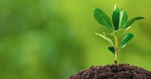
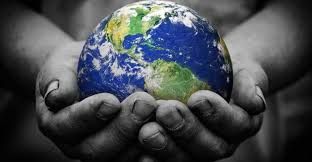

Que es el medio ambiente?
El medio ambiente es deber de todos y por esto es indispensable que siempre pensemos e indaguemos si algunas de nuestras acciones están afectando nuestro entorno. Hay innumerables rutinas diarias que tenemos en nuestra cotidianidad, que sin pensarlo, pueden estar haciéndole daño al medio ambiente, cada vez los daños de los ecosistemas son mayores, hoy quiero contarte cómo a través de tus rutinas diarias de cuidado corporal, facial y de cabello puedes contribuir.

|
Que es el Mundo?
La Tierra: La canica azul vista desde el Apolo 17.
Planisferio.
Mundo es el nombre común que atribuye o significa cuanto concierne al ser humano (a veces se enfatiza diciendo nuestro mundo), más específicamente la experiencia que lo circunda y en concreto aspectos más determinados que abarcan su vida y su civilización. Algo más abstractamente se considera mundo a la naturaleza o el universo físico, humano y social donde se sitúa el hombre y que constituye su entorno. |
Pulsa en las siguientes imagenes para estar informado sobre el mundo y el ambiente
|